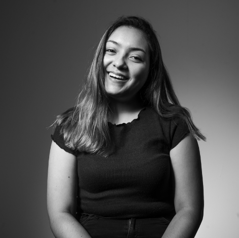
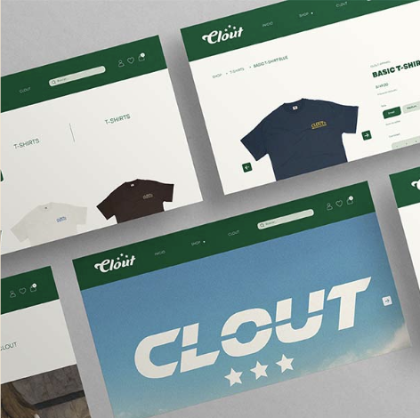

Sobre Mi:
Soy Alejandra Brousset, me considero una persona decidida, honesta y que asume riesgos. Actualmente me encuentro cursando el octavo ciclo de la carrera de Dirección y Diseño Publicitario en Toulouse Lautrec. Cuando se me asigna un proyecto, me gusta dar el 100% de mi en cada cosa que realizo.

Sobre Mi Carrera:
Estudio la carrera de Dirreción y Diseño Publicitario, me encuentro llevando los ultimos 3 cursos de mi malla curricular. Luego de terminar planeo realizar el bachiller para posteriormente hacer el proceso de titulación. Quiero especializarme en lo que es branding e identidad de marca y en el diseño web y movil.
Proyecto:
1.Ventilador automático que funcione en base a cuanto calor hace en un ambiente.
2.Ventilador que funcione sin electricidad ya que el calor seria su fuente de energía.

Sobre Mi Dibujo:
La idea del dibujo es plasmar los gustos de cada uno dentro de un foco, el foco representa que somos personas creativas y con ideas innovadoras es por eso que nuestros gustos están dentro, el foco sale de una nube ya que no hay límite para la creatividad.